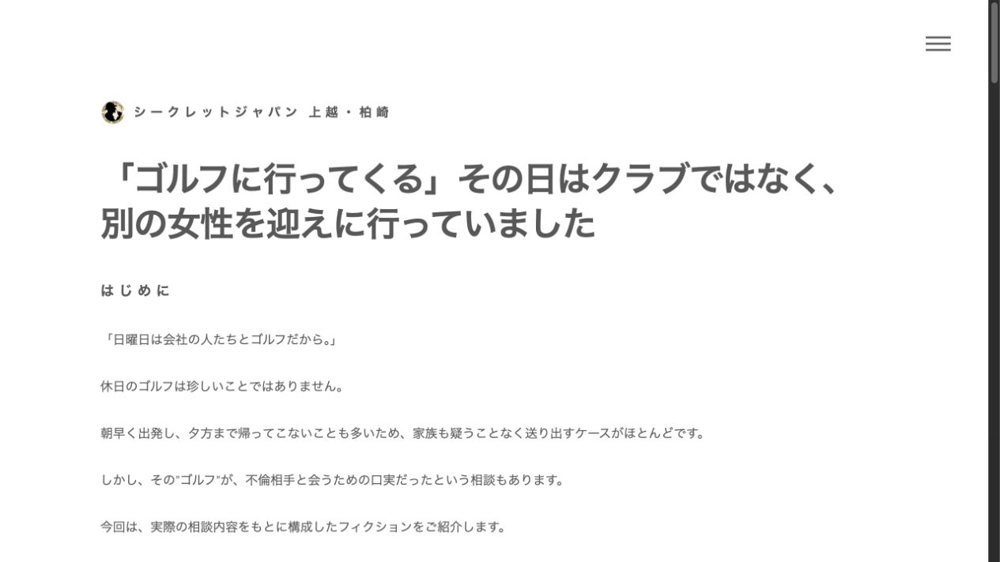
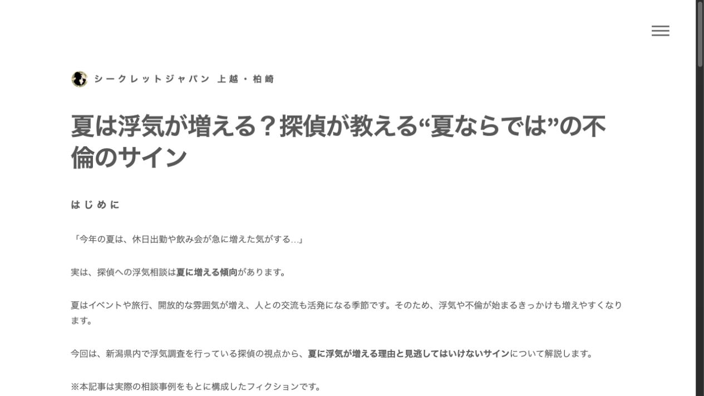
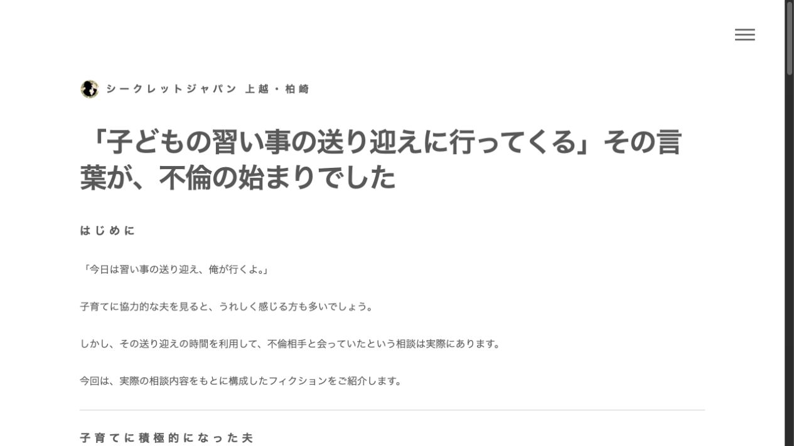
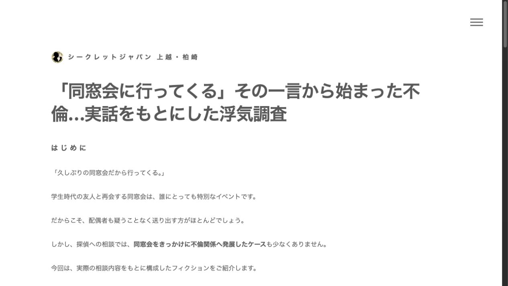
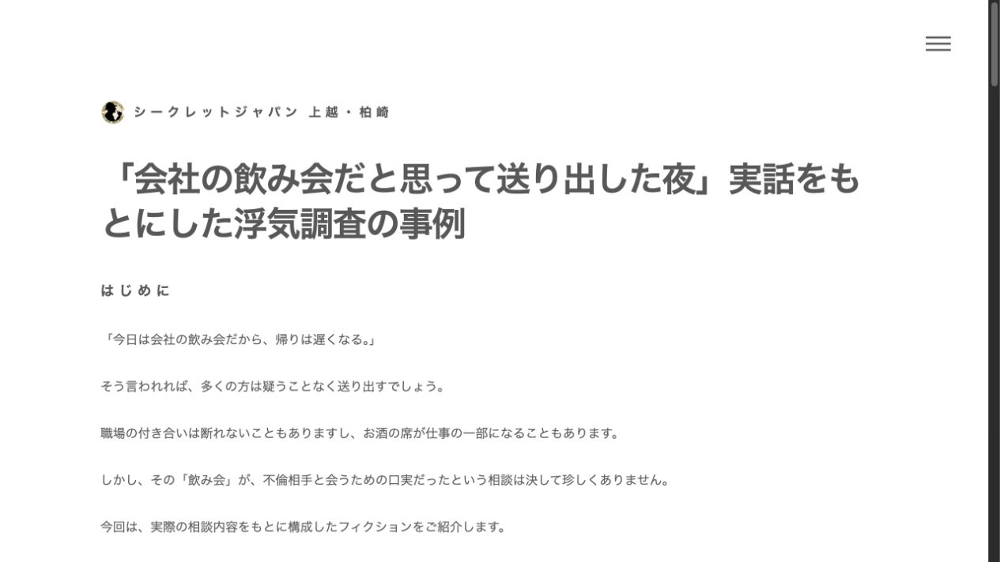
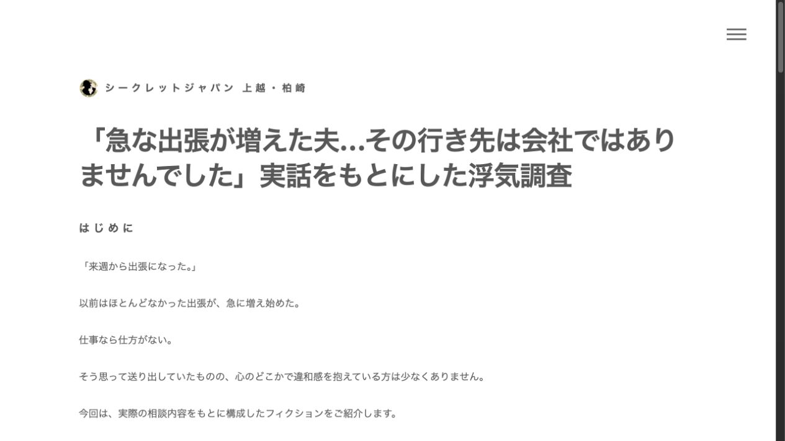
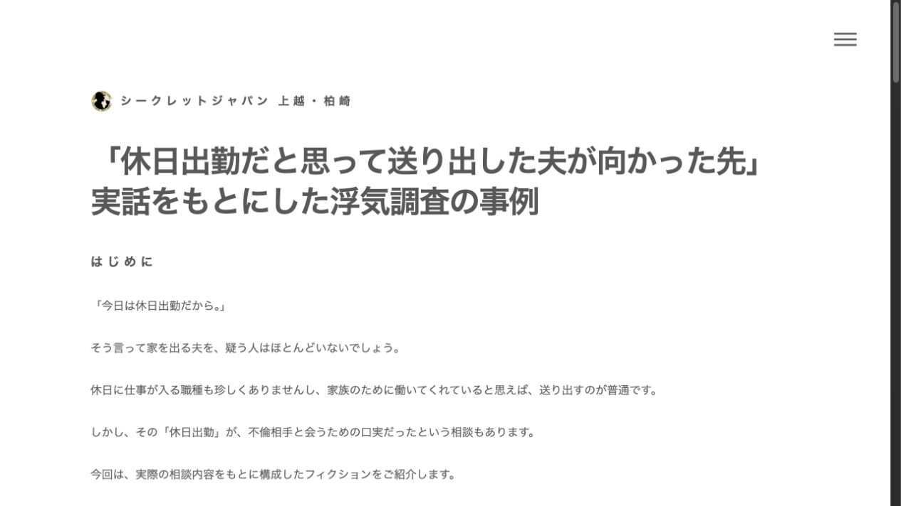
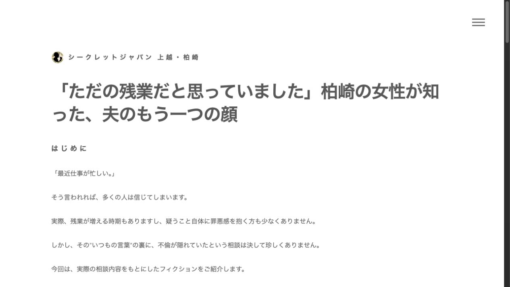
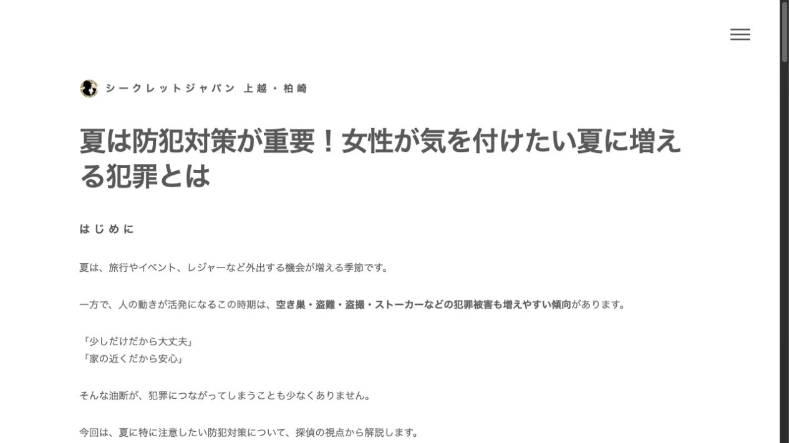
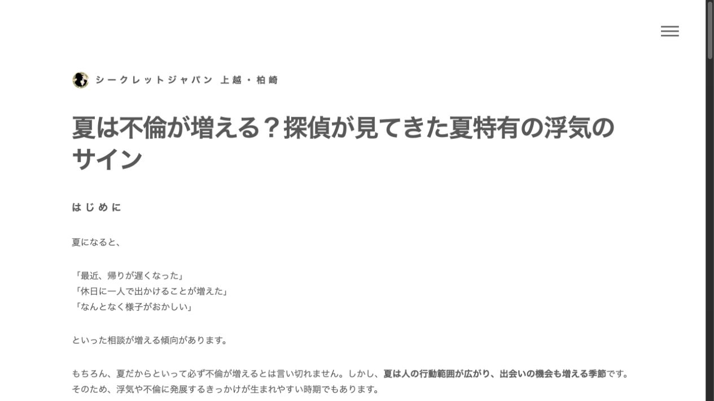

10 / 10Google Drive本文と一致（先頭タイトルのみ除外）
10 / 10記事ページ表示成功
0コンソールエラー
0表示上の要修正事項
記事別結果
| # | 記事 | 原文比較 | 表示 | 見出し |
|---|---|---|---|---|
| 1 | 「ゴルフに行ってくる」その日はクラブではなく、別の女性を迎えに行っていました | 一致 1,480文字 | 正常 エラーなし | H1が1件 |
| 2 | 夏は浮気が増える？探偵が教える“夏ならでは”の不倫のサイン | 一致 1,529文字 | 正常 エラーなし | H1が1件 |
| 3 | 「子どもの習い事の送り迎えに行ってくる」その言葉が、不倫の始まりでした | 一致 1,386文字 | 正常 エラーなし | H1が1件 |
| 4 | 「同窓会に行ってくる」その一言から始まった不倫…実話をもとにした浮気調査 | 一致 1,438文字 | 正常 エラーなし | H1が1件 |
| 5 | 「会社の飲み会だと思って送り出した夜」実話をもとにした浮気調査の事例 | 一致 1,534文字 | 正常 エラーなし | H1が1件 |
| 6 | 「急な出張が増えた夫…その行き先は会社ではありませんでした」実話をもとにした浮気調査 | 一致 1,402文字 | 正常 エラーなし | H1が1件 |
| 7 | 「休日出勤だと思って送り出した夫が向かった先」実話をもとにした浮気調査の事例 | 一致 1,426文字 | 正常 エラーなし | H1が1件 |
| 8 | 「ただの残業だと思っていました」柏崎の女性が知った、夫のもう一つの顔 | 一致 1,390文字 | 正常 エラーなし | H1が1件 |
| 9 | 夏は防犯対策が重要！女性が気を付けたい夏に増える犯罪とは | 一致 1,866文字 | 正常 エラーなし | H1が1件 |
| 10 | 夏は不倫が増える？探偵が見てきた夏特有の浮気のサイン | 一致 1,861文字 | 正常 エラーなし | H1が1件 |
スクリーンショット
{kind=link}

{kind=link}

{kind=link}

{kind=link}

{kind=link}

{kind=link}

{kind=link}

{kind=link}

{kind=link}

{kind=link}
